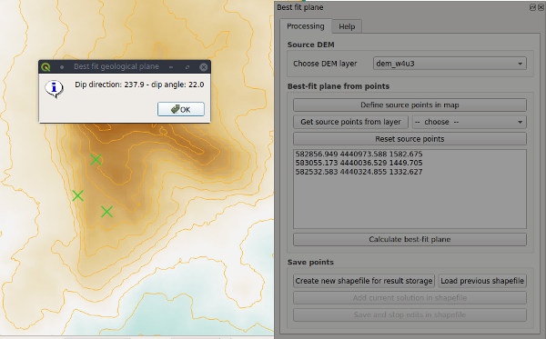

qgSurf - Best Fit Plane - help
Module purpose
The purpose of this module is to allow the derivation of the planar attitude that best fits a set of points on a topographic surface. This task is common in geological mapping and geological analysis. Coupling mapping or remote sensing information with topographic data, it is possible to estimate the orientation of the geological plane that fits a set of observations, all located on the topographic surface (example in Fig. 1).

Fig. 1. Example of estimation of a fault attitude in the western border of Mt. Alpi zone (southern Italy).
Points are drawn on the slope map derived by a DEM, with elevations extracted from DEM ("dem_w4u3" in this case).
Input data
The module requires a DEM as the elevation information source for points digitized by the user on the map. If the CRS of the DEM is in latitude-longitude, it is important to assign a planar CRS (e.g., UTM, Lambert Conformal Conic) to the current QGis project so that both horizontal and vertical measure units are the same (e.g., meters). Otherwise, the module result is not correct.
Usage
The user has to update the list of rasters currently loaded in the QGis project, by clicking on the Get current raster layers button [1 in Fig. 2].
After that, a single DEM layer has to be chosen by the updated list of rasters [2]. It provides the source elevation for points digitized by the user in a map.
Having completed the definition of the source DEM, we can now pass to the insertion of points in the map. It is activated by clicking the Define source points in map button [3]. As many points as clicked in the map are added to the list of source points [4]. Note that if you want to clear the list and also to reset the map view of defined points, you can click the same last button again.
When you are satisfied with the point choice, the best-fit-plane can be calculated by pressing the Calculate best-fit plane button [5]. A pop-up window should normally display the resulting plane dip direction and dip angle (see example in Fig. 1).
It is possible to save one or more set of best-fit plane solutions, together with their source points, in a shapefile. Initially, the user has to create an ad-hoc shapefile with the Create shapefile for storing results button [6]. Computed results can be added to this shapefile with the Add current solution to shapefile button [7], that opens a window when the user can insert a description of the computed solution (max. of 50 characters allowed).
When completed an analysis session, the results can be saved to the shapefile with the Save and stop edits in shapefile button [8] and loaded in the QGis project.
In a successive session, the previously created shapefile can be loaded with the Use previous shapefile button [9] and then new results added with the described commands.

Fig. 2. Screenshot of the module window.
Methodology
The basis of the algorithm is the application of singular value decomposition to derive the eigenvectors of a set of measures.
See, for instance, the discussion in
Best fit plane algorithms why different results?.